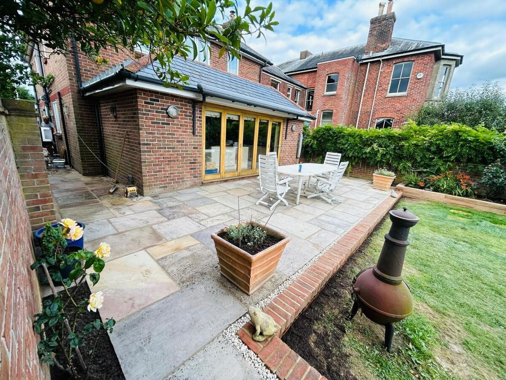
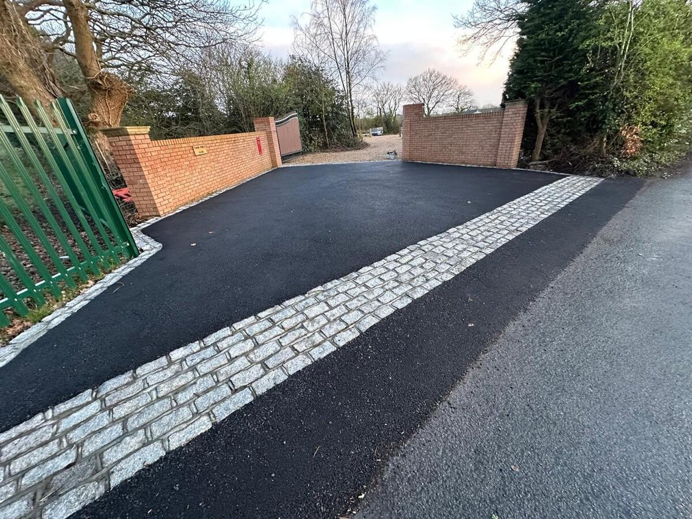

Nothing demonstrates the value of professional landscaping quite like a before-and-after comparison. The transformation from a tired, underused garden into a stunning outdoor living space is often dramatic — and the reaction from clients when they see the finished result is something our team at A Sterling Landscapes never tires of.
In this article, we walk through several real garden transformations we have completed across West Sussex, exploring the challenges, the approach and the results.
Transformation 1: The Complete Garden Overhaul — Chichester
The Brief
A family home in Chichester with a large but completely neglected rear garden. The existing space featured a patchy lawn, crumbling concrete paths, a rotting fence and an overall lack of structure or design. The clients wanted a space for entertaining, a safe area for young children and a low-maintenance garden that looked premium year-round.
The Approach
We began with a comprehensive site clearance — removing the old concrete, digging out the existing lawn and stripping back to bare earth. From there, we installed proper drainage, built a new sub-base across the patio area and began constructing the new garden from the ground up.
The design included a generous Indian sandstone patio with granite sett borders, new close board fencing with horizontal trellis, a lawned play area with premium artificial grass, raised planting beds in matching stone, and integrated LED pathway lighting.
The Result
The transformation was total. Where there had been mud, weeds and broken concrete, there was now a cohesive, beautiful garden that the family could use every day. The project took three weeks to complete and came in on budget. The clients told us it had transformed how they used their home — the garden had become an extension of their living space.

Transformation 2: The Coastal Garden — West Wittering
The Brief
A stunning coastal property near West Wittering with a large garden exposed to salt air and prevailing south-westerly winds. The existing garden had been designed decades earlier and had deteriorated — the fencing was wind-damaged, the paving was uneven and the planting had become overgrown and unkempt.
The Approach
Coastal gardens demand specific material choices. We selected porcelain paving for its resistance to salt air and frost, composite fencing panels that would not deteriorate in marine conditions, and a planting scheme designed with coastal-tolerant species.
The design embraced the coastal setting — clean lines, open sightlines towards the sea and a colour palette of cool greys and silvers that complemented the surroundings.
The Result
A contemporary coastal garden that looked as though it had been designed by a London studio — but built to withstand the reality of life by the sea. Two years on, it still looks as good as the day we finished it.
Transformation 3: The Sloping Garden — Petersfield
The Brief
A property on the edge of the South Downs with a steeply sloping rear garden that was essentially unusable. The owners wanted to create multiple level areas for different uses — a dining terrace, a relaxation area and a children's play zone — while retaining the views across the countryside.
The Approach
This was an engineering challenge as much as a design one. We built a series of retaining walls in natural stone to create three distinct levels, each connected by wide stone steps. Drainage was critical — the slope naturally channelled water towards the house, so we installed a comprehensive French drain system to redirect surface water safely.
Each level was finished with different materials: natural stone paving for the dining area, composite decking for the relaxation terrace, and artificial grass for the play zone. Bespoke timber steps with integrated lighting connected the levels.
The Result
A garden that had been a liability became the property's greatest asset. The multi-level design created distinct spaces that the family uses differently throughout the day and across seasons. The views were preserved through careful positioning of walls and planting, and the drainage system has performed flawlessly.
Transformation 4: The Driveway Makeover — Worthing
The Brief
First impressions matter. A detached property in Worthing had a tired tarmac driveway with crumbling edges, weedy joints and poor drainage that left standing water after rain. The owners wanted a driveway that matched the quality of their recently renovated home.
The Approach
We removed the existing tarmac, excavated to the correct depth and installed a new sub-base with integrated channel drainage. The new surface was block paving in a charcoal and silver blend, with a contrasting border in natural granite setts. New edging, gate posts and low-level LED uplighting completed the design.
The Result
The property was transformed from the street. What had been an eyesore was now a statement — the driveway complemented the house beautifully and resolved the drainage issues completely. Browse our driveway gallery for more examples.

What Every Transformation Has in Common
Regardless of the project size or scope, every successful garden transformation shares these elements:
- Proper preparation — The invisible groundwork is what makes the visible result last. We never cut corners on sub-bases, drainage or foundations.
- Quality materials — Premium stone, composite products and fixings from trusted suppliers. Cheap materials lead to early deterioration.
- Skilled installation — Our team of experienced professionals takes pride in precision. Tight joints, level surfaces, clean lines.
- Considered design — Every element relates to the next. Materials complement each other. Proportions feel right. The garden works as a whole.
- Client communication — We keep you informed throughout the build. No surprises, no delays, no hidden costs.
Start Your Transformation
Every one of the gardens above started with a conversation. If you can see the potential in your outdoor space but are not sure where to start, we would love to hear from you.
A Sterling Landscapes offers free, no-obligation consultations across West Sussex and beyond. Call 07795 599 909 or send us a message.
Ready to Transform Your Garden?
Contact us today for a free consultation and discover what is possible.